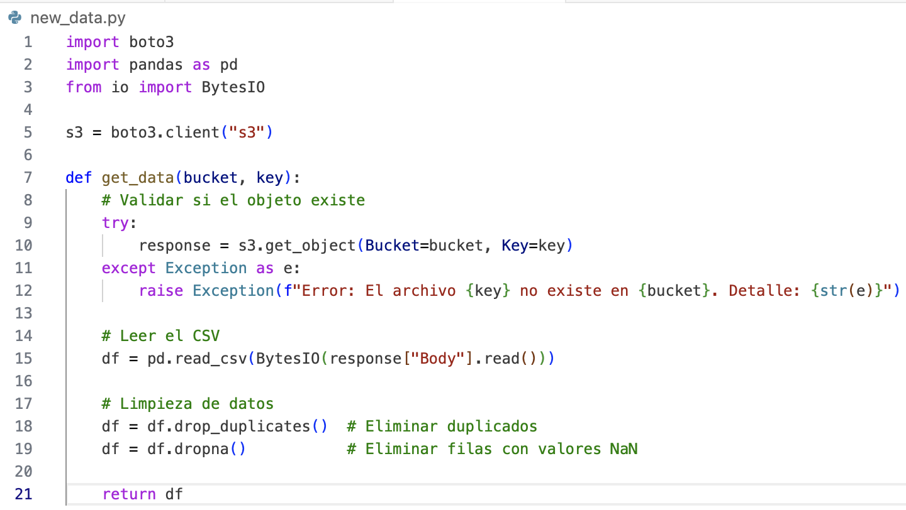
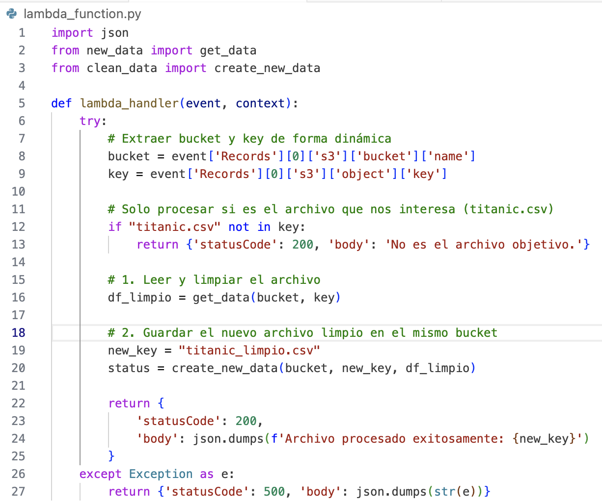
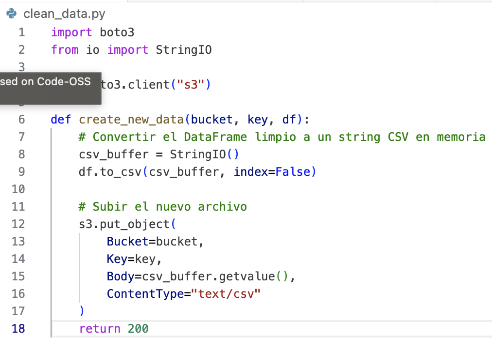
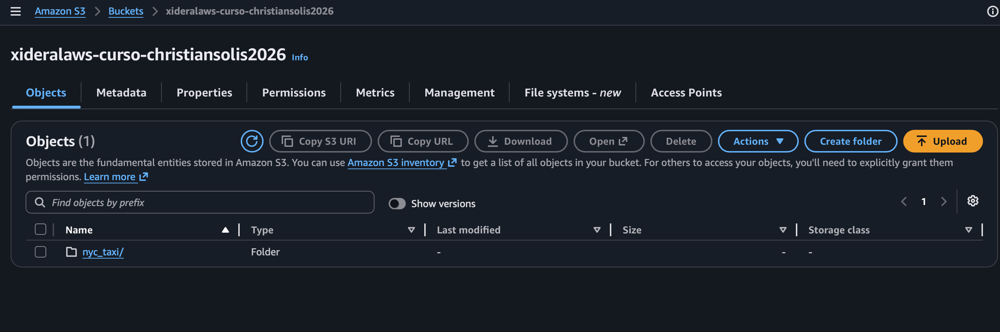
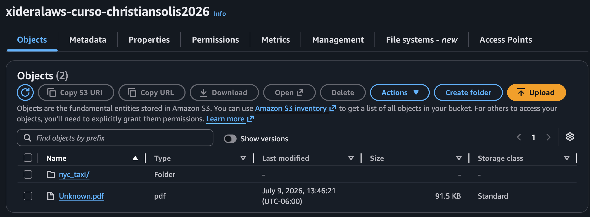
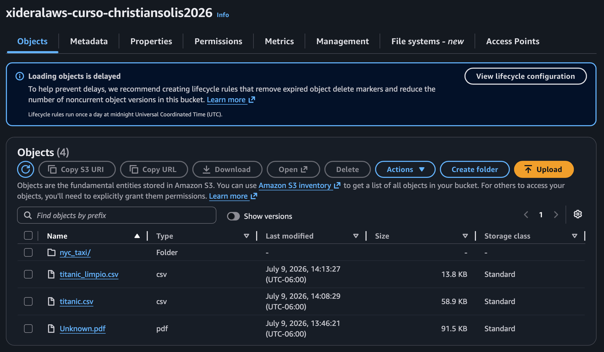

Por medio de un trigger configurado en S3, al recibir un evento de creación de objeto, el sistema detecta la carga de un archivo en el bucket xideralaws-curso-christiansolis2026. Si el archivo subido se llama exactamente titanic.csv, se activa una función Lambda que extrae la información y procede a realizar la limpieza de los datos. Posteriormente, la función genera y almacena en el mismo bucket un nuevo archivo procesado llamado titanic_limpio.csv. En caso de que el archivo cargado tenga cualquier otro nombre, la Lambda finaliza su ejecución sin procesar los datos.

Figura 1. Lambda-NewData: Se muestra el código encargado de validar la existencia del archivo en S3, cargarlo en memoria y aplicar la limpieza inicial eliminando duplicados y valores nulos.

Figura 2. Lambda-LambdaFunction: Se muestra el código orquestador que intercepta el evento del trigger, valida que el archivo sea estrictamente el objetivo y coordina el flujo entre la lectura y la escritura.

Figura 3. Lambda-CleanData: Se muestra el código responsable de recibir el DataFrame procesado, convertirlo a formato CSV en memoria y escribirlo de regreso en el bucket de S3.

Figura 4. Lambda-BucketVacío: Se comprueba el estado inicial del entorno, donde se muestra que el bucket únicamente contiene un archivo distinto a titanic.csv.

Figura 5. Lambda-Unknown: Evidencia del filtro de seguridad; se añade un archivo "Unknown.pdf" al bucket, el cual es ignorado exitosamente por la Lambda sin generar acciones.

Figura 6. Lambda-Success: Ejecución exitosa. Se añade "titanic.csv" y se observa cómo la Lambda genera y guarda automáticamente el archivo de salida "titanic_limpio.csv".